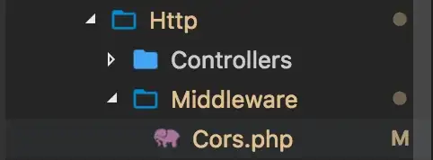

# Laravel 使用 Middleware 解決 ‘Access-Control-Allow-Origin’ 的問題
# 出國有很多方法，偷渡是一種
如果有在寫網頁程式相關的，多少都會碰過 No ‘Access-Control-Allow-Origin’。這簡單來說是瀏覽器同源策略 (same-origin policy) 下的產物。
所謂的跨域 (cross domain)，就是跨到其他了的網域。這不僅僅是不同的網域名稱，也可能是 同個域名，不同端口(port) 。瀏覽器存取時是有規則的，只要 協議 (通常指的是 http、https, …)、 域名 、 端口 有任何一個不同，就會被當作是不同的域。
以下以表格條列展示（假設原始網域為 host1.com ）
| URL | 是否成功 | 註解 |
|---|---|---|
| http://host1.com/arg1 | 成功 | |
| http://host1.com:8000/arg1 | 失敗 | 不同端口 (port) |
| http://host2.com/arg1 | 失敗 | 不同網域 |
| https://host1.com/arg1 | 失敗 | 不同協議 |
瀏覽器阻擋跨網域的目的主要是為了安全性，不讓你任意存取非本網域 (domain) 的資料。
試想，假如你在 A 網站，用一段 js 腳本就能訪問 B 網站，B 網站憑什麽讓你訪問，為什麽瀏覽器能讓你隨便訪問別的網站呢，說不定 B 網站存在著各種危險，比如盜取你的密碼，跨域攻擊 (CSRF) 等，這並不太合理。
但也是有例外的情況，有些情況是要訪問到別的網站的，比如加載一張圖片，這張圖片可能在別的網站，還有加載一個 js 文件，也是有可能在別的網站的，還有嵌入一個 frame 元素，也需要訪問到別的網站的內容。
因此，瀏覽器協議中也為此制訂了對策 — CORS
CORS 全名是 Cross-Origin Resource Sharing，跨域資源共享，這是瀏覽器的標準，也算是協議，基本上現代瀏覽器都支持，除了奇葩瀏覽器，例如 IE8、IE9，只支持部分特性。
以下將講解如何設定 Laravel，使得不同網域的前端可以跨網域 request 所需的資料。
# Laravel
首先我們先新創建一個 Middleware 叫做 Cors
php artisan make:middleware Cors
創建好之後，應該會看到 Laravel 已經建立好基本的板模了

<?phpnamespace App\Http\Middleware;use Closure;class Cors | |
{/** | |
* Handle an incoming request. | |
* | |
* @param \Illuminate\Http\Request $request | |
* @param \Closure $next | |
* @return mixed | |
*/ | |
public function handle($request, Closure $next) | |
{ | |
// | |
return $next($request); | |
} | |
} |
由於我們只希望同樣 domain name 的前端可以存取我們的 api ，因此我們在 Cors 只對相同 domain name 的前端允許 'Access-Control-Allow-Origin' ，我們在 handle 這個 function 中加入規則後，程式碼應該會長成這樣。
public function handle($request, Closure $next) | |
{ | |
// 設定允許訪問的 domain address | |
$host = $request->getHost(); // returns [dev.site.com](http://dev.site.com/) | |
$domains = [$host.':8080', $host.':80'];// 判斷 request 的 header 中是否包含 'ORIGIN' | |
if ( isset( $request->server()['HTTP_ORIGIN'] ) ) {$origin = $request->server()['HTTP_ORIGIN'];// 如果 origin 帶有 http, https 則把它濾掉 | |
$pattern = ""; | |
if (preg_match('#^https?://#', $origin)) { | |
$pattern = preg_replace('#^https?://#', '', $origin); | |
}if ( in_array( $pattern, $domains ) ) { | |
// 設定 response header 的信息 | |
return $next($request) | |
->header('Access-Control-Allow-Origin', $origin) | |
->header('Access-Control-Allow-Headers', 'Origin, Content-Type, Authorization') | |
->header('Access-Control-Allow-Methods', 'PUT, GET, POST, DELETE, OPTIONS'); | |
} | |
}return $next($request); | |
} |
寫好了 Cors 的 Middleware 後，我們將其加入我們的 Middleware 列表。修改 Kernel.php ，找到
protected $routeMiddleware = [ | |
'auth' => \Illuminate\Auth\Middleware\Authenticate::class, | |
'auth.basic' => \Illuminate\Auth\Middleware\AuthenticateWithBasicAuth::class, | |
'bindings' => \Illuminate\Routing\Middleware\SubstituteBindings::class, | |
'cache.headers' => \Illuminate\Http\Middleware\SetCacheHeaders::class, | |
'can' => \Illuminate\Auth\Middleware\Authorize::class, | |
'guest' => \App\Http\Middleware\RedirectIfAuthenticated::class, | |
'throttle' => \Illuminate\Routing\Middleware\ThrottleRequests::class, | |
]; |
並加入下面這行
'cors' => \App\Http\Middleware\Cors::class |
最後，我們要讓我們 Route 使用我們寫的 Middleware，因此在 web.php 中，我們所使用的 route 加入我們寫的 middleware，以下以 route::group 為範例：
Route::group([ | |
'middleware' => ['api', 'cors'], | |
'namespace' => $this->namespace, | |
'prefix' => 'api', | |
], function ($router) { | |
// some code here | |
}); |
如此，我們便設定好了讓相同 domain name 的前端可以存取我們 Laravel server 的資源的規則了。
# 參考目錄
- Adding Access-Control-Allow-Origin header response in Laravel 5.3 Passport